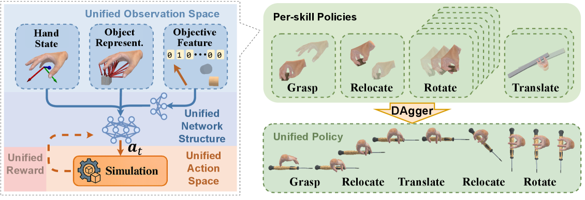
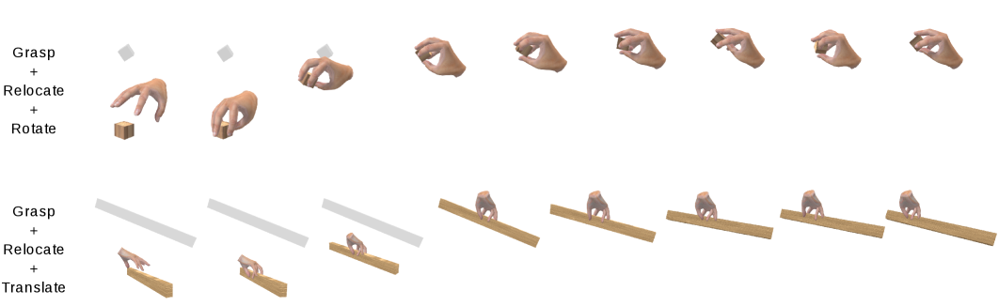

제출: 2026년 7월 30일 · 손 3종(사람 손 MANO 26자유도 · Allegro · Sharpa Wave 28자유도) · 학습/시험 물체 각 400개
한 줄 요약 (TL;DR)
손으로 물건을 다루는 일은 보통 네 가지 기술로 나뉘어 각각 따로 연구돼 왔다 — 집기, 들고 옮기기, 손 안에서 돌리기, 손 안에서 밀어 옮기기. 문제는 기술마다 제약 조건도, 목표 함수도, 심지어 쓰는 손 모양까지 달라서 이어 붙일 수가 없다는 것. "집어서 → 옮기고 → 손 안에서 돌린다" 같은 자연스러운 연속 동작이 안 된다. 이 논문은 네 기술을 "손과 물체의 상대적 움직임"이라는 하나의 관점으로 다시 쓴다. 무엇이 고정되고 무엇이 움직이는지만 바꾸면 넷이 같은 틀의 변형이 된다. 그래서 관찰·행동·보상을 통일하고, 기술별 전문가 정책 10개를 학습한 뒤 하나의 정책으로 압축했다. 네 기술 모두 98.7~99.1% 성공률을 유지하면서, 학습 때 못 본 모양(구 95.8%, 육각기둥 98.3%)에도 통하고, 재학습 없이 기술을 이어 붙여 장기 작업을 수행한다(집기+옮기기+밀기 96.3%).
1배경 · 문제의식
손재주가 필요한 조작(dexterous manipulation)에서, 물체를 놓치지 않고 계속 쥔 채 다뤄야 하는 작업들이 있다. 저자들은 이런 작업이 네 가지 기본 기술로 이루어진다고 본다.
집기(grasping) — 놓여 있는 물체를 손으로 잡는다.
옮기기(relocation) — 쥔 채로 손목을 움직여 물체를 다른 위치·자세로 가져간다.
손 안에서 돌리기(in-hand rotation) — 손목은 그대로 두고, 손가락만 써서 쥔 물체의 방향을 바꾼다.
손 안에서 밀어 옮기기(in-hand translation) — 마찬가지로 손가락만 써서 물체를 손 안에서 미끄러뜨려 위치를 바꾼다.
기존 연구는 이 넷을 따로따로 다뤘다. 각각 전용 제약 조건, 전용 목표 함수, 심지어 전용 손 모양까지 썼다. 그 결과 서로 호환되지 않아 이어 붙일 수 없다. 드라이버를 집어서(집기) → 손 안에서 돌려 자루를 바로잡고(돌리기) → 나사 쪽으로 가져가는(옮기기) 흐름이 사람에겐 당연하지만, 기술별 정책을 그냥 이어 붙이면 연결 지점에서 물체를 놓친다.
이 논문의 관점 전환: 넷을 별개 기술로 보지 말고, "손과 물체의 상대적 움직임" 하나로 보자. 그러면 차이는 무엇을 고정하고 무엇을 움직이느냐뿐이다 — 집기는 물체를 세상에 고정한 채 손이 다가가는 것, 옮기기는 물체를 손에 고정한 채 손목이 움직이는 것, 돌리기·밀기는 손목을 고정한 채 물체가 손 안에서 움직이는 것. 같은 틀의 네 가지 설정값인 셈이다.
2핵심 Contribution
네 기술을 하나의 틀로 통합 — 관찰 공간, 행동 공간, 보상 구조를 전부 공유하도록 다시 설계했다. 기술 간 차이는 "무엇이 고정이고 무엇이 목표인가"라는 설정값으로만 표현된다.
기술 하나만 아는 정책 10개 → 다 아는 정책 1개 — 각 기술을 강화학습으로 따로 익힌 전문가들을 단일 정책으로 압축했는데, 성능 손실이 거의 없다(집기 기준 전문가 99.0% vs 통합 98.7%). "기술들이 서로 충돌하지 않고 공존 가능하다"는 증거.
이어 붙이기가 그냥 된다 — 통일된 틀 덕분에 기술 전환 시 별도 처리나 재학습이 필요 없다. 집기+옮기기+밀기 연속 수행 96.3%, 집기+옮기기+돌리기 87.4%.
3Method
통일된 관찰 — 정책이 무엇을 보는가
세 덩어리로 구성한다.
손 상태 — 손목 위치·자세와 각 손가락 관절 각도.
상호작용을 담은 물체 표현 — 단순히 물체 위치만 주는 게 아니라, 어느 손가락이 닿아 있는지(접촉 상태), 얼마나 세게 누르는지(접촉력), 각 손가락에서 물체까지의 방향과 거리(거리 벡터)를 함께 준다.
목표 특징 — 지금 어떤 기술을 수행 중이며 목표가 무엇인지를 나타내는 값.
왜 접촉 정보를 넣나: 손 안에서 물체를 돌리거나 미는 동작은 손가락 하나하나가 언제 누르고 언제 떼는지에 전적으로 달려 있다. 물체가 어디 있는지만 알아서는 조절할 수 없다. 실제로 아래 ablation에서 접촉 상태를 빼면 돌리기 성공률이 98.8%→82.7%로 무너진다 — 이 논문에서 가장 큰 폭의 하락이다.
통일된 행동 — 정책이 무엇을 출력하는가
손목과 손가락 관절을 모두 포함한 손 전체의 움직임을, 절대 위치가 아니라 "현재에서 얼마나 더"라는 증분(incremental) 형태로 출력한다. 네 기술이 같은 출력 형식을 쓰므로, 중간에 기술이 바뀌어도 출력 규격이 달라지지 않는다 — 이어 붙이기가 매끄러운 이유다.
통일된 보상 — 무엇을 잘했다고 보는가
상호작용 목표
물체와 제대로 접촉하고 있는가 + 의도한 상대 운동이 일어나고 있는가
목표 추종
여러 기준 좌표계에서 목표 자세에 얼마나 가까워졌는가
정규화 항
불필요하게 과격하거나 부자연스러운 움직임에 벌점
네 기술을 같은 틀에 앉히기
차이는 "어느 좌표계에서 무엇을 고정하느냐"뿐이다.
기술
고정되는 것
움직이는 것
집기
물체가 세상 좌표계에 고정
손이 물체로 접근
옮기기
물체가 손 좌표계에 고정(쥔 상태 유지)
손목이 목표 자세로 이동
손 안에서 돌리기
손목 고정
지정한 축을 중심으로 물체 방향이 회전
손 안에서 밀기
손목 고정
지정한 축을 따라 물체 위치가 이동
학습 방법 — 전문가 10명을 한 명으로
먼저 기술별 정책 10개를 각각 PPO(시행착오로 보상을 최대화하는 대표적 강화학습 알고리즘)로 따로 학습한다. 그다음 이들을 DAgger로 하나의 정책에 압축한다.
DAgger가 무엇인가: 전문가를 흉내 내 배우되, 학생이 실제로 가본 상황에서 "전문가라면 여기서 뭘 했을까"를 물어 데이터를 계속 추가하는 방식이다. 그냥 전문가 기록만 따라 배우면 학생이 조금 어긋났을 때 본 적 없는 상황에 빠져 무너지는데, DAgger는 그 상황들까지 학습에 포함시켜 이를 막는다.
모든 정책은 같은 신경망 구조를 쓴다 — 관계 특징을 처리하는 MLP 인코더 + 행동을 내놓는 주 MLP.
4실험 결과
네 기술 각각의 성능 (통합 정책 하나로)
기술
성공률
정밀도 / 도달량
집기
98.7%
—
옮기기
99.0%
위치 오차 0.54cm
손 안에서 돌리기
98.8%
회전량 13.6 rad
손 안에서 밀기
99.1%
이동 거리 20.3cm
학습·시험 물체는 각각 400개(상자·원기둥). 크기는 손에 감싸 쥐는 것(0.045~0.075m)부터 긴 막대(0.6~0.8m)까지.
학습 때 못 본 모양에도 통하는가
상자와 원기둥만으로 학습했는데, 처음 보는 모양에서도 집기가 잘된다 — 구 95.8%, 육각기둥 98.3%. 모양에 맞춰 잡는 방식을 스스로 조정한다는 뜻이다.
손이 바뀌어도 되는가
사람 손 모델(MANO, 26자유도), 로봇 손 Allegro, Sharpa Wave(28자유도) 각각에 대해 따로 정책을 학습했더니 세 손 모두 비슷한 성능이 나왔다. 손 모양에 따라 정책을 새로 설계할 필요 없이 같은 틀을 그대로 쓸 수 있다는 의미.
기술을 이어 붙인 장기 작업
연속 동작
전체 성공률
집기 → 옮기기 → 손 안에서 밀기
96.3%
집기 → 옮기기 → 손 안에서 돌리기
87.4%
재학습 없이 전환된다. 돌리기가 포함된 쪽이 낮은 것은 손 안 회전이 가장 까다로운 동작이기 때문.
외부에서 방해해도 버티는가
물체 무게의 0~10배에 해당하는 힘으로 지속적으로 밀어도 성능이 잘 유지됐다. 조작 내내 물체를 안정적으로 붙들고 있음을 보여준다.
5Ablation — 어느 부품이 실제로 중요한가
뺀 것
영향
접촉 상태 정보
돌리기 98.8% → 82.7% (붕괴)
목표 추종 보상
옮기기 62.9% → 37.4% (급락)
거리 벡터
돌리기 98.8% → 96.5%
손목 잔차 행동
밀기 이동 거리 20.3cm → 19.7cm
목표 관찰
거의 영향 없음
접촉 정보가 생명줄: 손 안에서 돌리는 동작은 접촉 상태 없이는 불가능에 가깝다(-16.1%p). 손가락이 언제 누르고 떼는지를 모르면 물체를 굴릴 수 없다는 직관과 일치.
목표 추종 보상이 옮기기의 핵심: 이를 빼면 옮기기가 반토막 난다. 목표 지점으로 가야 할 이유 자체가 사라지므로 당연한 결과지만, 그 크기가 다른 기술보다 훨씬 크다.
압축해도 거의 안 잃는다: 전문가 10개를 하나로 합친 통합 정책이 집기 98.7%로, 전문가 각각(99.0%)과 사실상 동일. 네 기술이 서로 방해하지 않고 한 신경망에 공존한다는 이 논문의 핵심 주장을 뒷받침한다.
6핵심 Figure / Table

Figure 2 — 통합 틀과 학습 과정. (좌) 통일된 관찰 공간: 손 상태 + 상호작용을 담은 물체 표현 + 목표 특징이 하나의 신경망으로 들어가고, 통일된 행동 공간·보상으로 시뮬레이션에서 학습된다. (우) 기술별 전문가 정책(집기·옮기기·돌리기·밀기)을 각각 학습한 뒤 DAgger로 단일 통합 정책에 압축. 압축된 정책은 집기→옮기기→밀기→옮기기→돌리기처럼 기술을 자유롭게 이어 수행한다. (출처: arXiv:2607.28198)

Figure 4 — 기술을 이어 붙인 장기 동작. (상) 집기 → 옮기기 → 손 안에서 돌리기: 작은 상자를 집어 들어 올린 뒤 손가락만으로 방향을 바꾼다. (하) 집기 → 옮기기 → 손 안에서 밀기: 긴 막대를 집은 뒤 손 안에서 미끄러뜨려 쥐는 지점을 옮긴다. 전환 지점에서 물체를 놓치지 않는 것이 핵심. (출처: arXiv:2607.28198)